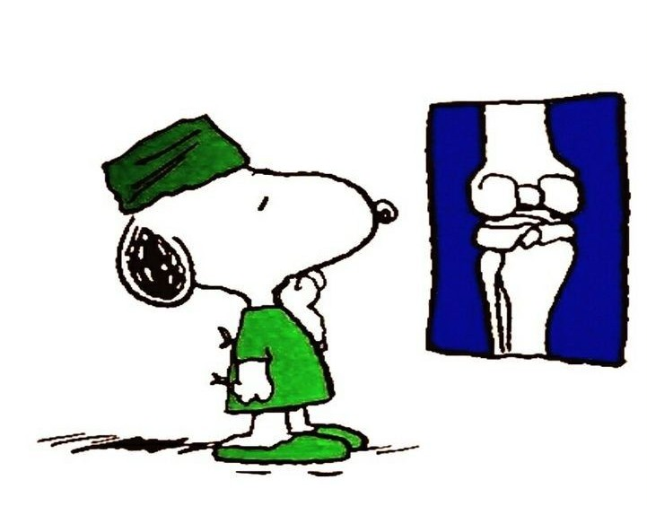

Bienvenido a TraumaShop

TraumaShop ofrece productos especializados en salud musculoesquelética, respaldados por el Instituto de Traumatología.
Nuestro catálogo incluye una amplia variedad de férulas, ortesis, placas, tornillos y kits de osteosíntesis, diseñados para satisfacer las necesidades de los profesionales de la salud.
Explora nuestro catálogo y encuentra el apoyo que necesitas para tu recuperación y bienestar.
Presiona un Hueso para Ver los Productos
PLACAS Y TORNILLOS PARA OSTEOSINTESIS

Clavícula
Húmero
Antebrazo
Radio y Cúbito
Mano
Cadera
Fémur
Tibia
Peroné
Pie